Using the color bar
The color bar is a color-coded legend for interpreting the results of an analysis. The color bar is visible in the Simulation Results environment. To learn about the color bar components, see:
You can use the options on the Color Bar tab on the ribbon to change color bar display attributes before you generate reports, images, or animation of the results. Here are some of the things you can change:
You can customize access to the functions on the Color Bar tab by adding buttons to the Quick Access toolbar and by defining keyboard shortcuts in the Customize dialog box. You can then save your customized results display settings for future use.
Anatomy of the color bar
You turn the minimum value marker, maximum value marker, header, and color bar on and off using these options in the Show group:
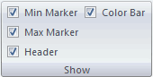
When the color bar is displayed (4), so are the title and the footer.
-
The title (3) at the top of the color bar shows the value units.
-
The footer (5) at the bottom of the color bar shows an arrow with the yield strength value of the material. The footer is displayed only for a Von Mises stress plot of single body parts where the yield strength is defined in the material properties.
-
The arrow is positioned on the legend at the yield strength value.
-
When the yield strength value is outside the range of values shown on the legend, the arrow is not shown on the legend but is displayed in the footer.
-
Independent of the color bar, you can display the descriptive header (1) and—for a user-defined numeric scale—the minimum and maximum value markers (6) and (2).
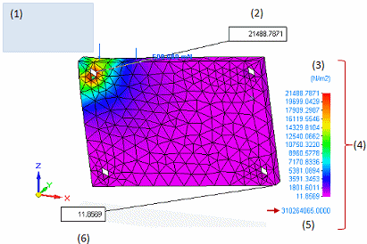
Positioning options
Flexible positioning options for the color bar and the descriptive heading enable you to arrange the window so that your study geometry is not obscured. Experiment with the icons in the Position group to find the best combination of settings for the color bar and the heading.
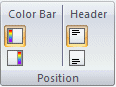
-
Move the color bar to the right or left side of the study geometry.
Note:You can change the size of the color bar using the Color Bar Width option in the Format group.
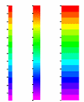
-
Display a descriptive header at the top or bottom of the window.
Note:You can adjust the heading size using the Font Size option in the Font group. The controls in the Font group apply to all images displayed with text, including images exported to reports.
Contents of the header
The descriptive header can be shown or hidden in the analysis results window. Its contents vary with the type of study.
The example below identifies the content areas in a header.
|
Part 1 |
Static Study 1 |
Aluminum 1060 |
|
Load Case 2 |
Mode 1 |
138.9975 Hz |
Stress-Elemental |
|
Contour: Solid Von Mises Stress |
|
Deformation: Total Translation |
|
Animation: Frame 4 of 8 |
|
Date: Thursday, February 26, 2009 3:07 PM 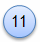 |
|
Location in header |
Header example |
Description |
|
Part 1 |
Document (model) name. |
|
|
Static Study 1 |
Analysis study name. |
|
|
Aluminum 1060 |
Material name. This is reported only for part and sheet metal models. |
|
|
Load Case 2 |
Identifies the result case for the component currently displayed. Displayed only for the results of a linear buckling study. |
|
|
Mode 1 |
Identifies the result mode for the component currently displayed. Displayed for the following: normal modes study and the modal results for a linear buckling study. |
|
|
138.9975 Hz |
Frequency. Displays the value and units for a normal modes study, and the Eigenvalue number for a linear buckling study. |
|
|
Stress-Elemental |
Result type. |
|
|
Contour: Solid Von Mises Stress |
Result component. This text is displayed only when the Contour check box is selected on the Home tab→Show group in the Simulation Results environment. |
|
|
Deformation: Total Translation |
Deformation. This text is displayed only when the Deformation check box is selected on the Home tab→Show group in the Simulation Results environment. |
|
|
Animation: Frame 4 of 8 |
Current animation frame number. This is displayed only when the Home tab→Animate group→Animate command is running. |
|
|
Date: Thursday, February 26, 2009 3:07 PM |
Date and time that the analysis results were generated. |
|
|
Note:
You can redisplay the current results without regenerating them by right-clicking the study Results node in the Simulation study navigator pane, and then selecting the View command. |
||
Numeric value format
You can use the options on the Color Bar tab→Format group to change the numeric value format—Scientific or Floating Point—and the number of decimal places independently. These changes are applied to the values displayed on the color bar, the minimum and maximum markers, the probe value tables and graphs, and the reports.
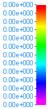
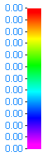
-
You can set the Number Format option to Automatic, so that Solid Edge Simulation selects the best possible numerical format for each of the following values, instead of using the same format for all:
-
The node values displayed in the Probe Table, and the node locations displayed in the graphics window.
-
The numbers displayed in the color bar column.
-
-
You can specify the explicit numerical format you want to use by setting the Number Format to Scientific or Floating.
-
You can change the number of decimal places displayed using the Number Of Decimal Places list.
-
You can change the font size, color, and type of the numeric values using the options in the Font group on the Color Bar tab.
For more information, see Change the numeric value format.
Color bar scale
The color bar colors are scaled automatically across the range of values in the analysis results. The minimum value of this scale and the maximum value are shown on the Color Bar tab→Scale group.
You can use the Visible Results option to show just the portions of the color bar that correspond to the displayed simulation results. This is helpful when reviewing an assembly in which you have hidden some components or clipped the geometry to expose the internal results of bolt or weld connector simulations.
If you want to show results in the model with different minimum and maximum values, you can change to a user-defined scale.
For more information, see Apply a user-defined scale to the color bar legend.
With a user-defined scale, you may also want to specify underflow and overflow values and colors.
Minimum and maximum value markers
The minimum and maximum value markers identify a result value based on the contour style you selected for results display.
-
For smooth and banded contour styles, the markers identify:
-
The node that has the minimum value.
-
The node that has the maximum value.
-
-
For the elemental contour style, the markers identify:
-
The element that has the minimum value.
-
The element that has the maximum value.
-
For these nodes or elements, the markers display the value, unit, and node or element number from the Probe data table.
For more information, see Display minimum and maximum value markers.
Text size, color, and font
You can use the options in the Font group on the Color Bar tab to change the size, color, and font type of text. You can add boldface and italics. Changes made using these controls affect all of the following:
-
Color bar components: legend values, title, and footer
-
Descriptive header
-
Minimum and maximum value markers
-
Information in the probe data table
-
The text displayed with images.
Color bar colors
You can change the color bar colors interactively using the options in the Color Bar tab→Colors group.
-
Color bar color spectrum
You can change the color spectrum and apply it to the displayed results using the Spectrum list.
Structural
Thermal
Grayscale
Rainbow
Stoplight
No MagentaIf you use the Structural color spectrum, you can remove magenta from the color bar and the contour plot by selecting the No Magenta check box.
Using the magenta color
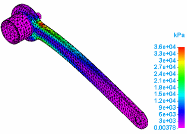
Not using the magenta color
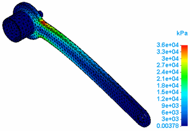
-
- Number of levels
-
You can change the number of color levels displayed. This does not change the height of the color bar, but rather applies more or fewer colors across the results range.
Values can be 2 through 32.
-
- Invert the color bar spectrum
-
Select the Invert Spectrum check box to reverse the order of the color spectrum in the color bar.
-
- Underflow, Overflow
-
When the numerical format is User Defined rather than Automatic, you can use overflow and underflow colors to identify values that are above or below the value scale shown in the color bar.
Example:The default underflow color is black, and the overflow color is gray. You can change these colors, and you can specify whether to display the underflow and overflow indicators, using independent controls on the Color Bar tab. For more information, see Specify overflow and underflow colors.
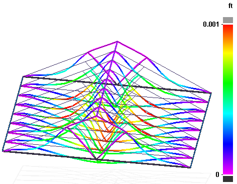
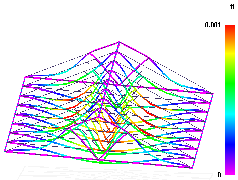
Background color and image
To make text and images easier to see and print, you can change the background of the graphics window from a gray-shaded gradient to white or to another color. The background is controlled by two different settings: background type and background color.
For more information, see Change the background color.